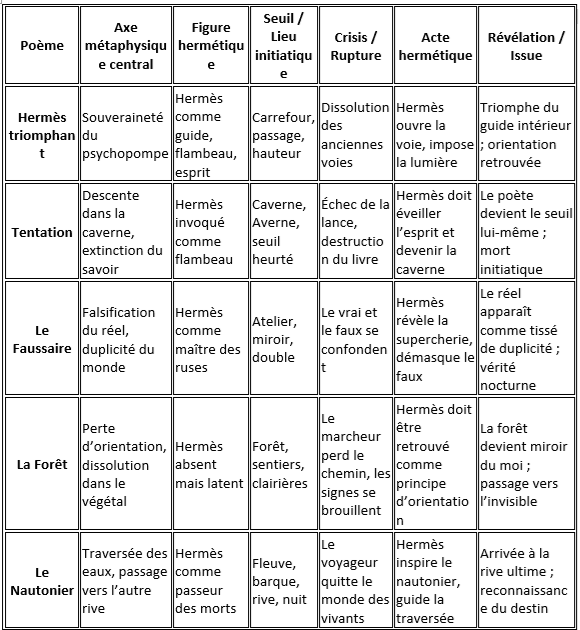
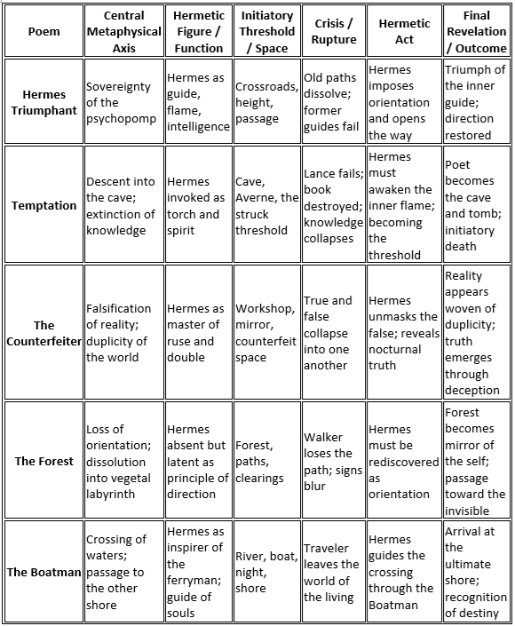

|
Transl. Christian Souchon 01.01.2005 (c) (r) All rights reserved |

|
Transl. Christian Souchon 01.01.2005 (c) (r) All rights reserved |
Encore un dialogue entre le poète et son "jumeau nocturne" qui lui interdit de communiquer comme le ferait tout un chacun, mais qui est aussi l'inspirateur de sa poésie.
(Vers à onze pieds)
Again a dialog between the poet and his “nocturnal twin” who forbides him to communicate, as anybody would, but inspires his poetry.
(Irregular verse)
|
Voici un tableau de correspondances complet pour les cinq poèmes que Galiana regroupe sous le titre « Hermès triomphant » :
Hermès triomphant · Tentation · Le Faussaire · La Forêt · Le Nautonier. Je structure le tableau selon les axes métaphysiques qui organisent ce chapitre : Hermétisme et souveraineté, la descente en l'Averne, la Falsification, l'Errance en forêt, la Traversée finale. Chaque poème occupe une chambre différente du même édifice initiatique. 1. Hermès comme axe souverain Dans les cinq textes, Hermès apparaît sous différentes formes : guide triomphant (Hermès triomphant) flambeau dans la nuit (Tentation) dieu des ruses et des doubles (Le Faussaire) principe d’orientation perdu puis retrouvé (La Forêt) passeur des morts (Le Nautonier) Hermès est le psychopompe total, maître : des seuils, des passages, des doubles, des morts, des illusions, des orientations. 2. Le chapitre est structuré comme une traversée initiatique Hermès triomphant — apparition du guide Tentation — descente dans la caverne, mort symbolique Le Faussaire — confrontation au faux, au double, au mensonge du monde La Forêt — perte d’orientation, errance, dissolution Le Nautonier — traversée finale, passage vers l’autre rive C’est une progression hermétique : Appel → Descente → Démasquage → Errance → Traversée. 3. Les lieux forment une géographie hermétique Carrefour (Hermès triomphant) Caverne / Averne (Tentation) Atelier / miroir (Faussaire) Forêt (La Forêt) Fleuve / barque (Nautonier) Ces lieux sont les cinq étapes classiques de l’initiation : Le seuil La descente La confrontation au double L’égarement La traversée 4. Les crises sont des dissolutions successives du moi perte des repères (Hermès triomphant) perte du savoir (Tentation) perte du vrai (Faussaire) perte du chemin (La Forêt) perte du monde des vivants (Nautonier) Chaque poème retire une couche de l’identité. 5. Les révélations sont des transformations hermétiques Hermès triomphe → orientation Tentation → devenir le seuil Faussaire → vérité nocturne Forêt → miroir végétal du moi Nautonier → passage vers l’autre rive Le chapitre entier est une initiation hermétique complète.  |
Here is the correspondence table for the five poems Galiana groups under the chapter title “Hermes Triumphant”: Hermes triumphant, Temptation, The Counterfeiter, The Forest, The Boatman. I preserve the metaphysical architecture you’re building: Hermetic sovereignty, Descent into the Cave, Falsification, Forest‑errancy, and the Final crossing. Each poem inhabits a different chamber in the same initiatic building. 1. Hermes as the sovereign axis Across the five poems, Hermes appears in different modalities: victorious guide (Hermes Triumphant) torch in the cave (Temptation) god of ruse and duplicity (The Counterfeiter) lost orientation to be recovered (The Forest) "passeur" of souls (The Boatman) He is the total psychopomp, master of: thresholds doubles deception orientation death crossing 2. The chapter forms a complete initiatory journey Hermes Triumphant — the guide appears Temptation — descent and symbolic death The Counterfeiter — confrontation with the false and the double The Forest — errancy and dissolution The Boatman — final crossing to the other shore This is the Hermetic progression: Call → Descent → Unmasking → Errancy → Crossing. 3. The geography of the chapter is hermetic Crossroads (Hermes Triumphant) Cave / Averne (Temptation) Workshop / mirror (Counterfeiter) Forest (The Forest) River / boat (The Boatman) These are the five classical spaces of initiation: Threshold Descent Confrontation with the double Loss of orientation Passage to the other shore 4. Each poem removes one layer of the self loss of old guidance (Hermes Triumphant) loss of knowledge (Temptation) loss of truth (The Counterfeiter) loss of direction (The Forest) loss of the living world (The Boatman) The chapter is a progressive stripping of identity. 5. Each poem ends with a Hermetic transformation Hermes Triumphant → orientation restored Temptation → becoming the threshold The Counterfeiter → nocturnal truth revealed The Forest → vegetal mirror of the self The Boatman → arrival at the ultimate shore Together, they form a complete Hermetic initiation.  |
Listen to "Helmsman" in English